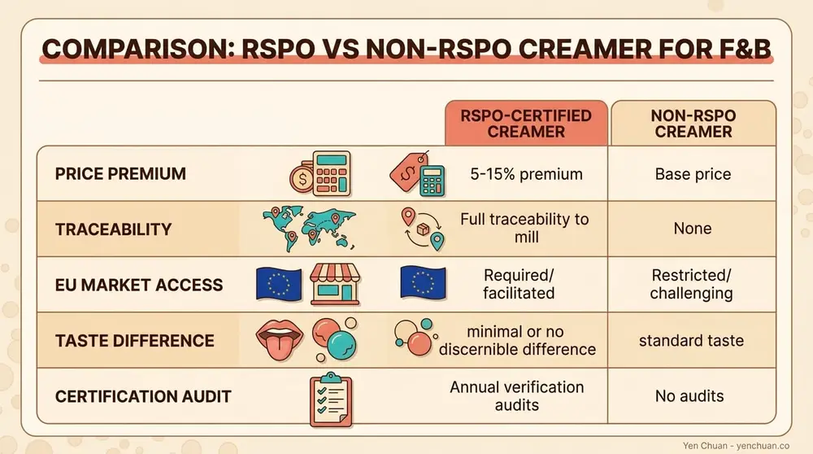
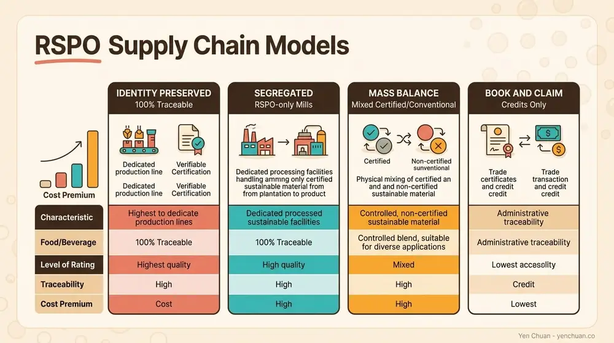

Articles / Business & sourcing
RSPO vs Non-RSPO Creamer: B2B Buyer Guide
2026-03-10 · Sourcing, Industry Trends

If you've noticed suppliers mentioning "RSPO certified" creamer lately, you're not alone. Major chains from Starbucks to regional boba networks now require it. But switching to RSPO means higher costs and supply chain complexity. Is the premium worth it for independent boba shops?
The answer depends on your market, growth ambitions, and customer base. This guide breaks down what RSPO certification actually means, the real cost differences, and the regulatory pressure reshaping the creamer market.
What RSPO Certification Actually Means
The Roundtable on Sustainable Palm Oil (RSPO) is a global standard certifying that palm oil—a key ingredient in non-dairy creamers—comes from farms and processors meeting environmental and social criteria. RSPO doesn't eliminate palm oil use; it ensures producers manage land responsibly, protect biodiversity, and respect worker rights.
Non-dairy creamer contains palm kernel oil or hydrogenated palm oil as its primary ingredient, making it cheaper than dairy while delivering the creaminess customers expect in bubble tea and coffee. The trade-off: without certification, creamer suppliers face mounting regulatory barriers.
The 5-15% Cost Premium: Where It Comes From
RSPO certification isn't free. Producers and refiners pay auditing fees, management costs, and supply chain tracking. These costs typically push creamer prices 5-15% higher than non-certified alternatives.
Breaking down the structure:
- Certification and auditing: Producers pay ongoing fees to maintain RSPO status. Initial certification costs plantation operators 466 billion Indonesian rupiahs (~$30,000 USD) annually, though larger operations spread costs across greater volumes.
- Supply chain compliance: Tracking certified oil through refineries and processors adds logistics overhead. Mass Balance models (mixing certified with conventional oil) cost 3-8% more. Segregated models (keeping certified oil separate) run 10-15% higher.
- Volume risk: Smaller suppliers absorb higher per-unit costs since certification fees stay fixed regardless of purchase volume.
For a boba shop buying 500 kg monthly, expect an additional $200-600 annually switching to RSPO. Larger chains buying 5+ tons monthly see proportionally lower cost-per-unit increases but still face total budget impacts.

Quality: Are You Really Getting Better Creamer?
Here's the uncomfortable truth: RSPO certification doesn't guarantee superior taste, texture, or mixing properties. A certified creamer performs identically to non-certified creamer in your drinks.
What RSPO does affect is sourcing consistency and environmental impact. Certified plantations follow documented harvest practices, pesticide restrictions, and worker protections. This stability matters for large-scale operators managing reputation risk and supply reliability.
For product quality itself—viscosity, color, shelf life, foam stability—you'll find excellent non-certified creamers and subpar certified ones. Quality depends on the refiner's process, not the palm oil's certification status.
The real quality advantage: Supply chain traceability. RSPO certified suppliers maintain detailed documentation proving oil origin and handling. If your creamer batch arrives with transparency, you can make informed sourcing claims to customers. This matters for shops targeting sustainability-conscious demographics.
The Regulatory Wake-Up Call: EUDR and Market Access
Certification became business-critical in late 2023 when the European Union adopted the Deforestation Regulation (EUDR), requiring all palm products entering Europe to prove their source land wasn't deforested after December 31, 2020. Implementation begins December 30, 2026 for large corporations and June 30, 2027 for smaller businesses.
For boba shops: if you export concentrate, powder blends, or finished products to EU markets, your creamer suppliers must provide EUDR-compliant documentation. Non-certified suppliers can't provide this. Even if you're purely domestic-focused, major chains requiring EUDR-ready suppliers will eventually pressure their entire vendor network.
The regulation covers crude palm oil, palm kernel oil, and 12 palm derivatives. Most non-dairy creamers fall within scope. Traceability back to cultivation origin is mandatory—"mass balance" documentation (mixing of sources) no longer suffices for EUDR.
Why Major Chains Now Demand RSPO
Cargill, one of the world's largest palm oil refiners, committed to supplying RSPO-certified palm oil across U.S. refineries as of January 2024. Starbucks, Nestlé, PepsiCo, and Unilever all maintain public commitments to 100% RSPO sourcing.
For boba shop supply chains, this means:
- Chain and franchise requirements: Chains like Tiger Sugar, Gong Cha, and Chatime increasingly specify RSPO in supplier agreements. If you plan franchising or multi-unit expansion, RSPO becomes non-negotiable.
- Retail partnership criteria: Shops selling bottled or ready-to-drink beverages through convenience stores or supermarkets must meet retailer sustainability standards. Most major retailers now require supplier audits confirming RSPO usage.
- Reputational risk: A single supplier controversy (deforestation allegations, labor violations) can damage your brand. Certified suppliers carry professional liability insurance and regular audits, reducing this risk.
For independent, single-location shops with loyal local customers, RSPO remains optional. For growth-focused operators, it's increasingly essential.
Mass Balance vs. Segregated: Which Model Fits Your Needs?
Understanding RSPO supply chain models helps you negotiate better terms with suppliers and explain sourcing to customers.

Mass Balance Model: Certified palm oil is monitored administratively but mixed with conventional oil. As long as total certified input doesn't exceed certified output, the model complies. Cost premium: 3-8%.
Mass Balance works because it allows refineries to serve both certified and non-certified customers using the same equipment. A refiner might process 100 tons of certified oil and 400 tons of conventional oil simultaneously, then "balance" by allocating certified volumes proportionally to orders. From a market efficiency standpoint, it's practical.
Limitation: EUDR rejects mass balance. If you're selling into EU markets by 2026, mass balance won't suffice.
Segregated Model: Certified oil stays physically separate throughout the supply chain. Different equipment, storage, and handling routes ensure certified creamer never contacts conventional product. Cost premium: 10-15%.
Segregated offers undeniable traceability and cleaner sustainability messaging. It's required for EUDR compliance and preferred by premium brands making public sustainability commitments.
Trade-off: Higher cost and reduced supplier flexibility. Your creamer batch may have longer lead times if your supplier must coordinate segregated production schedules.
Practical advice: Start with mass balance if you're not exporting to EU and want to manage costs. Plan migration to segregated before 2026 if you anticipate European expansion or major chain partnerships.
How to Verify RSPO Claims and Avoid Greenwashing
Suppliers claim RSPO certification often without rigorous proof. Here's how to validate:
-
Check RSPO's public register: Visit rspo.org and search the certified member directory. Legitimate RSPO members appear here. Lack of listing means claims are false.
-
Request supply chain certificates: Ask suppliers for their RSPO Supply Chain Certification document and the certifying body name (DNV, SCS Global, Intertek, etc.). Verify the certificate hasn't expired.
-
Confirm refinery certification: Your creamer supplier must source from RSPO-certified refineries. A supplier buying from a non-certified refiner can't deliver certified product, regardless of what they claim.
-
Ask for batch-level documentation: High-assurance suppliers provide batch certificates confirming each shipment's RSPO status and supply chain model (mass balance or segregated). This transparency signals professional operations.
-
Watch for "intention to certify": Some suppliers claim future certification without current status. Verify current certifications only.
Major RSPO certifiers serving food manufacturers include DNV, SCS Global Services, and Intertek. Request certifying body contacts if claims seem uncertain.
Switching Your Creamer: Practical Next Steps
If you've decided to transition to RSPO, avoid rushing. Thoughtful implementation prevents supply gaps and budget surprises.
Month 1: Audit your current creamer usage Track monthly consumption in kilograms. Calculate total annual spend. Determine if your creamer supplier currently holds any RSPO certification (they might already use it without having told you).
Month 2: Request supplier options Ask your current supplier if they offer RSPO certified alternatives and at what cost premium. Compare with 2-3 alternative suppliers. Request samples of both mass balance and segregated options if considering either model.
Month 3: Pilot testing Order a small batch of certified creamer and test it identically to your current product. Taste, texture, and customer response are identical, but verify this for your specific workflow. Many shops report zero difference, but confirmation reduces anxiety.
Month 4: Transition timeline Coordinate with your supplier on switchover timing. Avoid overlapping stock to prevent waste. Plan for 1-2 months of supply transition depending on your current inventory turnover.
Beyond month 4: Documentation and communication Once switched, request batch certificates for your records. If customers ask about sustainability, mention your RSPO commitment. This differentiates you, particularly in environmentally conscious urban markets.
FAQ
Q: Will RSPO creamer taste different?
No. RSPO certification doesn't alter the creamer's flavor, texture, or mixing properties. Quality depends on refinery processes, not certification status. Verified testing with your current customers likely reveals no detectable difference.
Q: Can I claim "sustainable" if I use RSPO creamer?
Carefully. RSPO doesn't mean carbon-neutral or zero environmental impact—it means the palm oil producer meets social and environmental standards. Marketing claims must be accurate. "Responsibly sourced" or "sustainably certified" are safer than "eco-friendly" or "carbon-neutral."
Q: What happens if I don't switch by 2026?
If you're purely domestic and not exporting, no immediate regulatory consequence. But chain partnerships and retail shelf space increasingly require RSPO. Waiting until 2027 means racing to catch up when demand spikes, likely facing supplier shortages and premium pricing.
Q: Is segregated always better than mass balance?
No. Segregated offers cleaner traceability and EU compliance, but costs 5-7 percentage points more. Mass balance works fine for domestic markets and non-regulated chains. Evaluate your growth plans before choosing.
Q: My supplier says they're "RSPO-friendly" but not certified. What does that mean?
Nothing official. "RSPO-friendly," "RSPO-aligned," or "RSPO-ready" are unregulated claims. Demand proof of actual RSPO Supply Chain Certification from a recognized certifier (DNV, SCS, Intertek). Anything less is greenwashing.
Your Next Move
Switching to RSPO isn't a one-time decision—it's future-proofing your supply chain for regulatory change and market demand. Whether you move immediately or phase in over two years, starting the conversation with suppliers now prevents scrambling later.
Looking for RSPO-certified creamer and powder options for your boba shop? Browse our powder selection or get in touch with our team to discuss sustainable sourcing options. We also offer customization services to source certified ingredients aligned with your specific requirements and budget.
About the Author
The Yen Chuan team specializes in ingredient sourcing and supply chain optimization for bubble tea operators across North America and Asia. We partner with suppliers meeting rigorous sustainability standards, helping shops transition to certified ingredients without budget disruption. Learn more about our sustainable sourcing approach and how we support boba businesses scaling responsibly.